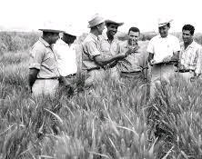

Dr. Norman Borlaug, third from the left, trains biologist in Mexico on how to increase wheat yields -
part of his life-long war on hunger.
Here's a time line of Dr. Borlaug's life:
1914 - Born in Cresco, Iowa
1933 - Leaves his family's farm to attend the University of Minnesota, thanks to a
Depression era program known as the "National Youth Administration"
1935 - Has to stop school to save more money. Works in the Civillian Corps, helping
starving Americans. "I saw how food changed them", he said. "All of this left scars on me."
1937 - Finishes university and takes a job in the US Forestry Service
1938 - Marries a wife of 69 years Margaret Gibon. Gets laid off due to budgets cuts,
inspired by Elvin Charles Stakman, he returns to school to study under Stakman, who teaches him about breeding
pest-resistent plants.
1941 - Tries to enroll in military after the Pearl Harbor attack, but is rejected. Instead,
the militaryasked his lab to work on waterproof glue ,DDT to control malaria, disinfection, and ither applied
science.
1942 - Recieves a Ph.D in Genetics and Planr Pathology
1944 - Rejects a 100% salary increase from Dupunt, leaves behind his pregnant wife, and
flies to Mexico to head a new Plant Pathology program. Over the next 16 years, his team breeds 6,000 different
strain of disease resistant wheat - including different varieties for each major climate on Earth
1945 - Discovers a way to wheat twice each season, doubling wheat yields
1953 - crosses a short, sturdy dwarf breed of wheat with a high yielding American breed,
creating a strain that respondes well to fertilizer. It goes on to produce 95% of Mexico's wheat.
1962 - Visits Delhi and brings his high yielding strains of wheat to the Indian
subcontinent in time to help migrate mass starvation due to a rapidly expanding population
1970 - Recieves the Nobel Peace Prize
1983 - helps seven Africa countries dramatically increase their maize and sorghum yields
1984 - becomes a distinguised professor at A&M University
2005 - states "we will have to double world food supply by 2050." Argues that genetically
modified crops are the only way we can meet the demand, as we run out of arable land. Says GM crops are not
inherently dangerous because "we've been gentically modifying plants and animals for a long time. Long before
we called in science, people were selecting the best breeds."